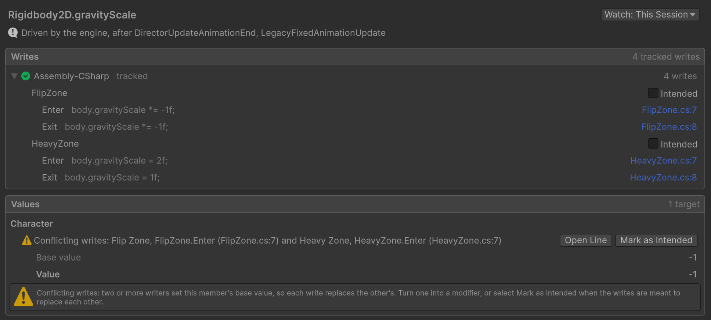

void Enter() => body.gravityScale *= (Modifier)-1f; void Exit() => body.gravityScale *= -1f= Modifier.Stop;
void Enter() => body.gravityScale = (Modifier)2f; void Exit() => body.gravityScale = 1f= Modifier.Stop;

Coordinate the scripts that write the same value.